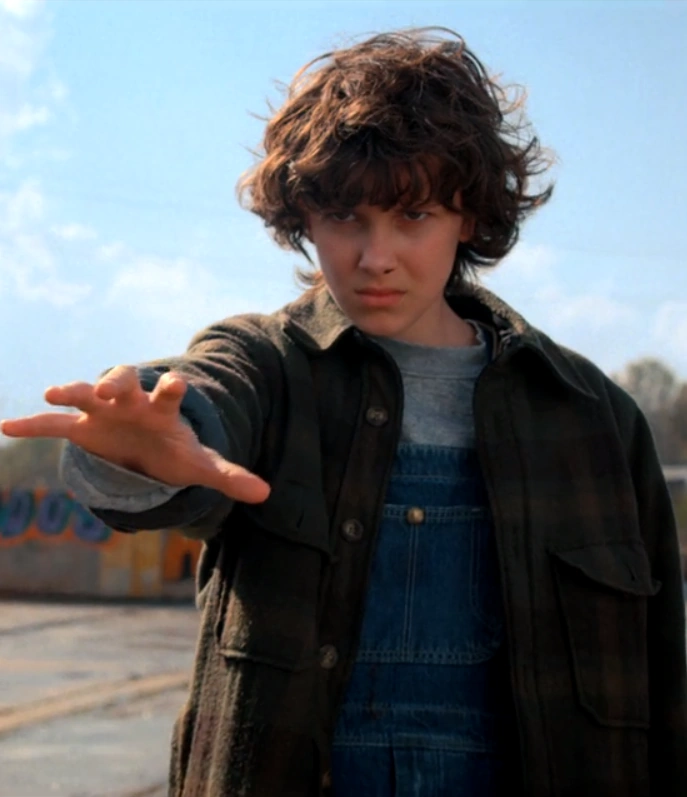

Main Characters

Eleven
"Friends don't lie."
A girl with psychokinetic abilities, central to the fight against the Upside Down.

Mike Wheeler
"Please don't leave me, El."
A loyal and brave member of the group, known for his protective nature.

Max Mayfield
"It's just a game, Lucas."
Her bond with Lucas grows stronger as the seasons progress.

Lucas Sinclair
"We can't just sit here and do nothing."
A brave and pragmatic member of the group, often skeptical but loyal.

Nancy Wheeler
"We have to face this head-on."
Smart and determined, she investigates Hawkins’ mysteries with courage.

Steve Harrington
"I may be a pretty boy, but I'm tough."
Initially a popular teen, he evolves into a protective and caring figure.